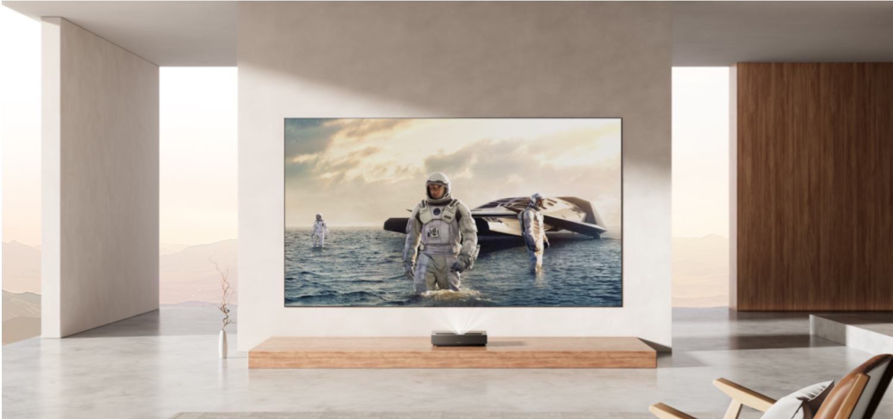

By Guillermo Kurten and Nick Perry Updated August 28, 2024 9:31AM

Projector maker Formovie Technology today announced a new, more affordable ultra short throw (UST) projector to its lineup.
The Formovie Cinema Edge is a reasonably priced $2,500 projector with solid brightness and color specs, as well as Google TV with native Netflix built in.
Formovie is offering the Cinema Edge at a special preorder discounted price of $2,200 starting today.
The Chinese company, which also sells projector screens and compact projectors under its Xming sub-brand, launched its Formovie Theater UST projector in September 2022 to wide acclaim. The Cinema Edge takes some of what the $3,500 (at launch) Formovie Theater offers, makes some improvements, and dials a few things down to make for a capable and much more affordable projector
Available September 10, the Cinema Edge offers 1,900 ISO lumens of brightness, and with its 0.23:1 throw ratio, it can throw a 100-inch
image onto your screen or wall from just 9 inches away, which is what makes UST projectors such a big draw for those with limited space.
But if that’s not enough, the projector’s image size can hit a massive 150 inches, too. In contrast, the Formovie Theatre was capped at 1,800 ISO lumens.
The Cinema Edge not only runs on the Google TV operating system (instead of Android TV), but like several newer projectors on the market running Google TV,
it also comes with Netflix preloaded — no more complicated side-loading of the video streaming app — so users can get up and running faster. Of course,
with three HDMI 2.1 ports (with one eARC), you can also connect your favorite streaming device , like an Apple TV or Amazon Fire TV Stick.
Picture-wise, the Formovie Cinema Edge covers 110% of the Rec. 709 color gamut, which should translate to excellent color reproduction for your movie and TV watching.
Additionally, the projector features a 3000:1 contrast ratio, as well as HDR10 support (although no Dolby Vision, like its Formovie Theater cousin). We’ll have to get our
hands on it to test out how it performs in bright and dark room situations.
The Cinema Edge drops the height-channel capabilities of the Formovie Theater’s
Dolby Atmos and instead includes Dolby Audio, which can still produce some excellently immersive audio.
It also features two 15-watt internal speakers with Dolby Audio and DTS-X support. It’s likely you’ll
still need to add one of the best soundbars to the setup for better sound.
With setup features such as motorized focus and 8-point keystone correction, the Cinema Edge should be a
cinch to get configured and up and running. Gamers will be happy to see a game mode feature that offers
a refresh rate of 4K at 60Hz and a 41.9 millisecond response time
UST projectors do tend to be larger than compact and regular-throw projectors, but because they can sit on your
media unit under your screen or wall, they don’t get in the way.
The Formovie Cinema Edge measures 18 by 12 by 3.5 inches and weighs 15 pounds.
Sling TV begins some limited streaming in 4K resolution
Samsung adds new sizes to its microLED TV lineup — and they start at $110K
Onn 4K Pro vs. Chromecast with Google TV 4K: $50 streaming devices face off
Formovie’s new Xming Episode One projector is $299 worth of compact cuteness
TCL prices its insanely bright, 115-inch QM89 4K TV at $27,000
| Derek Malcolm Contributing Editor, A/V |
Derek Malcolm is a Toronto-based technology journalist, editor, and content specialist whose work has
appeared in publications such as Toronto Life, Canadian Business, The Globe and Mail, Business Insider,
Today's Parent, and The Huffington Post.